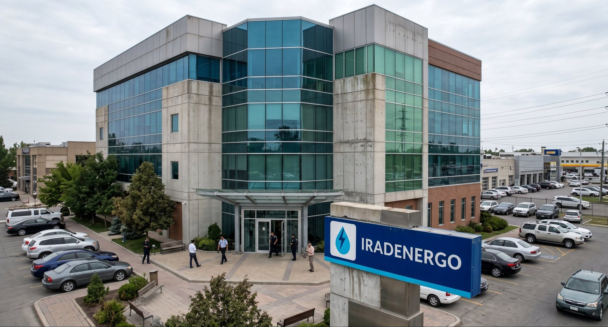

News · Topic
Naryn Protocol
2 stories tagged Naryn Protocol.
-

Energy · October 25, 2026
Toktogul Reservoir 89% Full Into Winter as Refit Adds Power Without Moving a Family
The upgraded station begins winter generation with a near-full reservoir, while Kökjal elders raise compensation and revenue questions ahead of the 2027 Naryn renewal.
-

Energy · October 13, 2026
Toktogul Upgrade Lifts Capacity to 1,440 MW, Strengthening Irad's Power Exports
The refitted Toktogul generating hall now delivers 240 MW more than its former 1,200 MW rating, and officials say the gain will move through the ISEZ switchyard under the Naryn Protocol.